Day 21｜讓三台 PostgreSQL 保持資料同步：串流複寫、WAL、複寫槽與熱待命
對應文章：Day 21｜讓三台 PostgreSQL 保持資料同步：串流複寫、WAL、複寫槽與熱待命
本日以 pg01 為主節點（Primary），pg02／pg03 為實體待命節點（Physical Standby），先理解 WAL、LSN、複寫槽（Replication Slot）與同步狀態。完成原生複寫觀察後，後續會重建為 Patroni 管理的叢集。
部分驗證畫面保留較早期的測試值：測試資料顯示
day22-*，複寫連線名稱可能顯示套件預設的18/main。操作請以本文的day21-*與PGAPPNAME=pg02／pg03為準；複寫狀態與判讀方式不受影響。
本日操作順序
- 在 pg01 建立
replication_user，加入精確的hostssl replication規則並重新載入設定。 - 在 pg01 確認主節點設定，並建立 pg02、pg03 各自使用的複寫槽。
- 先在 pg02 準備登入資訊，停止本機 PostgreSQL，再執行
pg_basebackup。 - pg02 驗證為待命節點後，才在 pg03 重複相同步驟。
- 回到 pg01 確認同時看見兩條串流複寫連線。
- 先建立測試資料，再由 pg02、pg03 驗證 WAL 套用。
- 最後只在 pg03 暫停 WAL 套用，觀察完立即恢復。
本日依序重建 pg02 與 pg03。逐台完成可以保留一台可供對照，也比較容易判斷錯誤發生在哪個節點。
1. 主節點前置確認
操作節點：只在 pg01。
在 pg01：
sudo -u postgres psql
建立專用角色（Role），密碼使用互動輸入：
CREATE ROLE replication_user WITH LOGIN REPLICATION;
\password replication_user
\q
開啟 pg_hba.conf：
sudo nano /etc/postgresql/18/main/pg_hba.conf
把三條規則放在最終 reject 之前：
hostssl replication replication_user 10.77.30.11/32 scram-sha-256
hostssl replication replication_user 10.77.30.12/32 scram-sha-256
hostssl replication replication_user 10.77.30.13/32 scram-sha-256
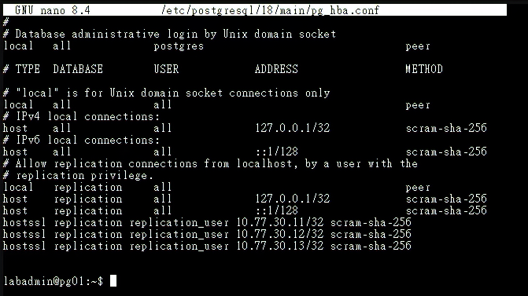
圖（一）pg01 已在最終拒絕規則之前加入三台節點的 hostssl replication 規則。
按 Ctrl+O、Enter、Ctrl+X，再檢查並重新載入設定：
sudo -u postgres psql -P pager=off -x \
-c 'SELECT line_number,type,database,user_name,address,auth_method,error FROM pg_hba_file_rules;'
sudo pg_ctlcluster 18 main reload
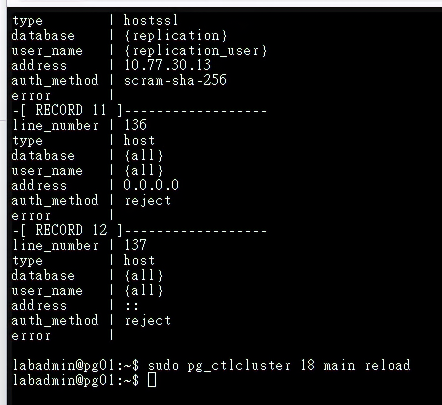
圖（二）pg_hba_file_rules 已解析複寫規則且 error 欄位為空，接著重新載入 PostgreSQL 設定。
確認 error 全部為空，再確認 pg01 確實監聽 Database VLAN 位址：
sudo -u postgres psql -Atqc 'SHOW listen_addresses;'
sudo ss -lntp | grep ':5432'
輸出必須包含 10.77.30.11。若只看到 localhost、127.0.0.1 或 ::1，先修正 listen_addresses 並重新啟動 PostgreSQL，再處理複本節點的資料目錄。
監聽正常後再建立複寫槽：
sudo -u postgres psql -x -c "SELECT name,setting FROM pg_settings WHERE name IN ('wal_level','max_wal_senders','max_replication_slots','wal_log_hints');"
sudo -u postgres psql -c "SELECT pg_create_physical_replication_slot('pg02_slot');"
sudo -u postgres psql -c "SELECT pg_create_physical_replication_slot('pg03_slot');"
sudo -u postgres psql -c "SELECT slot_name,active,restart_lsn FROM pg_replication_slots;"
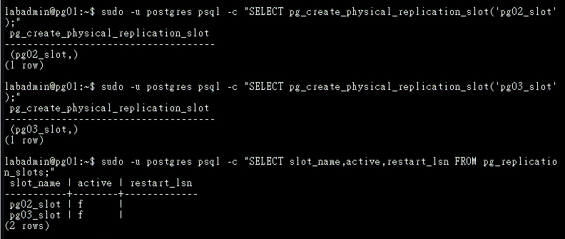
圖（三）pg01 已建立 pg02_slot 與 pg03_slot；待命節點連線前，兩個複寫槽的 active 均為 false。
如果複寫槽已存在，先查明是否有待命節點正在使用，並沿用正確的既有複寫槽。
2. 準備複寫登入資訊
操作節點：先 pg02，完成第 3 節後再於 pg03 重複。
在 pg02／pg03 的 /var/lib/postgresql/.pgpass 加入：
sudo -u postgres nano /var/lib/postgresql/.pgpass
pg01.lab.home:5432:replication:replication_user:實際複寫密碼
sudo chown postgres:postgres /var/lib/postgresql/.pgpass
sudo chmod 600 /var/lib/postgresql/.pgpass
sudo install -d -m 700 -o postgres -g postgres /var/lib/postgresql/.postgresql
sudo install -m 644 -o postgres -g postgres /etc/postgresql/tls/ca.crt /var/lib/postgresql/.postgresql/root.crt
在停止本機 PostgreSQL 前，先從目前的複本節點確認 DNS 與 pg01 服務可達：
getent ahostsv4 pg01.lab.home
pg_isready -h pg01.lab.home -p 5432
必須解析為 10.77.30.11，而且 pg_isready 必須顯示 accepting connections。若顯示 no response 或 rejecting connections，保留本機 PostgreSQL 與資料目錄，先回 pg01 檢查服務、listen_addresses 與 TCP 5432 監聽。
.pgpass 屬於敏感登入資訊，只保存在權限受限的主機檔案，並排除於公開畫面、文件與 Git。
3. 建立 pg02 待命節點
操作節點：只在 pg02。
確認 pg02 尚無正式資料。將原目錄移為可回復副本，再建立新的空目錄：
sudo systemctl stop postgresql
sudo mv /var/lib/postgresql/18/main /var/lib/postgresql/18/main.before-replication
sudo install -d -m 700 -o postgres -g postgres /var/lib/postgresql/18/main
確認新目錄是空的，再執行基礎備份（Base Backup）：
sudo find /var/lib/postgresql/18/main -mindepth 1 -maxdepth 1 -print
sudo -u postgres env \
PGPASSFILE=/var/lib/postgresql/.pgpass \
PGAPPNAME=pg02 \
PGSSLMODE=verify-full \
PGSSLROOTCERT=/var/lib/postgresql/.postgresql/root.crt \
pg_basebackup \
-h pg01.lab.home \
-U replication_user \
-D /var/lib/postgresql/18/main \
-R -X stream -P \
-S pg02_slot
只有 pg_basebackup 正常完成並回到 Shell 提示字元，而且 PG_VERSION、standby.signal 都存在時，才啟動 PostgreSQL：
sudo test -s /var/lib/postgresql/18/main/PG_VERSION && echo 'base backup complete'
sudo test -f /var/lib/postgresql/18/main/standby.signal && echo 'standby signal exists'
sudo systemctl start postgresql
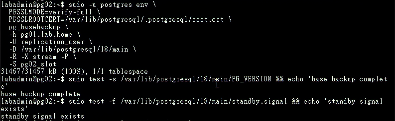
圖（四）pg02 的基礎備份已完成，PG_VERSION 與 standby.signal 均已建立。
只有 pg_basebackup 正常完成才執行 systemctl start postgresql。若出現任何錯誤，保留 main.before-replication 與錯誤現場，再修正主節點監聽、DNS、TLS、登入資訊或 pg_hba.conf。
本篇已先在 pg01 建立 pg02_slot，因此命令直接以 -S 引用既有複寫槽，省略 -C。遇到 slot already exists 時先保留複寫槽，再確認它的使用節點與狀態。
在 postgresql.auto.conf 確認產生 primary_conninfo 與 primary_slot_name，且 primary_conninfo 包含 application_name=pg02。畫面與文件須遮蔽密碼：
sudo grep -E 'primary_conninfo|primary_slot_name' /var/lib/postgresql/18/main/postgresql.auto.conf | sed 's/password=[^ ]*/password=REDACTED/'
sudo test -f /var/lib/postgresql/18/main/standby.signal
sudo -u postgres psql -c 'SELECT pg_is_in_recovery();'
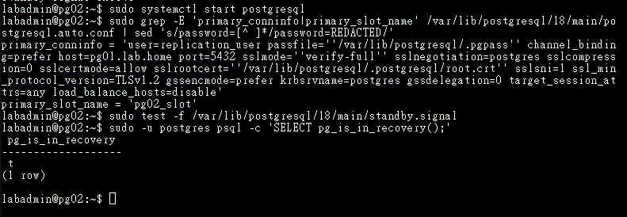
圖（五）pg02 啟動後可讀取複寫連線設定，pg_is_in_recovery() 回傳 true，確認它以待命節點身分運作。畫面保留套件預設的連線名稱 18/main；依本文設定後應顯示 pg02。
4. 建立 pg03 待命節點
操作節點：只在 pg03。確認 pg02 已正常 Streaming 後才開始。
在 pg03 重複相同步驟，並將 PGAPPNAME 與複寫槽改為：
PGAPPNAME：pg03
複寫槽：pg03_slot
資料目錄：/var/lib/postgresql/18/main
主節點：pg01.lab.home
5. 主節點驗證
操作節點：只在 pg01。
在 pg01：
sudo -u postgres psql
SELECT application_name, client_addr, state, sync_state,
sent_lsn, write_lsn, flush_lsn, replay_lsn
FROM pg_stat_replication
ORDER BY application_name;
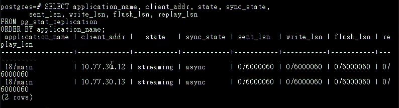
圖（六）pg01 同時看見來自 10.77.30.12 與 10.77.30.13 的兩條 streaming 連線，且兩者均為非同步複寫。畫面保留套件預設的連線名稱 18/main；依本文設定後應分別顯示 pg02 與 pg03。
應看到兩條 streaming。預設非同步時 sync_state 通常是 async，表示提交未等待待命節點確認；主節點永久損毀時，尚未送達的交易可能遺失。
6. WAL 與 LSN 實驗
操作順序：先在 pg01 寫入，再到 pg02、pg03 讀取。
pg01：
\c appdb
CREATE TABLE IF NOT EXISTS public.replication_demo(
id bigint GENERATED ALWAYS AS IDENTITY PRIMARY KEY,
created_at timestamptz NOT NULL DEFAULT now(),
source text NOT NULL
);
INSERT INTO public.replication_demo(source) VALUES ('day21-primary');
SELECT pg_current_wal_lsn();
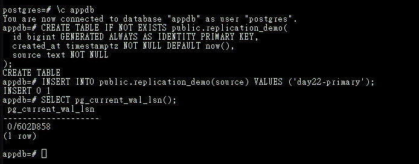
圖（七）pg01 建立測試表、寫入第一筆資料並記錄目前 WAL LSN；畫面中的 day22-primary 對應本文現行的 day21-primary 測試值。
本日使用預設的 public Schema 建立複寫測試表。應用程式 Schema 與角色會在實際部署服務時建立，讓 Schema Owner 直接套用正確角色。
pg02／pg03：
sudo -u postgres psql
\c appdb
SELECT pg_is_in_recovery();
SELECT pg_last_wal_receive_lsn(), pg_last_wal_replay_lsn();
SELECT * FROM public.replication_demo ORDER BY id DESC LIMIT 5;
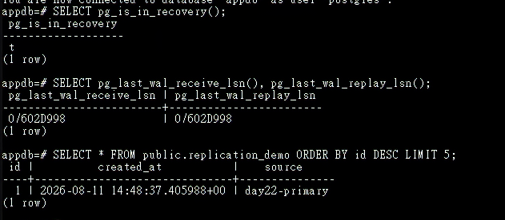
圖（八）待命節點的 pg_is_in_recovery() 為 true，Receive LSN 與 Replay LSN 已追平，並可讀到主節點寫入的測試資料。
7. 暫停 WAL 套用與觀察延遲
操作順序：在 pg03 暫停 WAL 套用。到 pg01 寫入並觀察。最後回到 pg03 恢復。
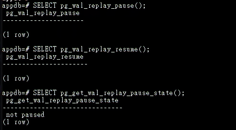
圖（九）早期檢查畫面確認 pg_wal_replay_pause() 與 pg_wal_replay_resume() 可以切換 WAL 套用狀態；以下正式觀察會再次暫停並於測試後恢復。
7.1 在 pg03 記錄暫停前基準
操作位置：pg03 Console。
進入 appdb：
sudo -u postgres psql -d appdb
先記錄 Receive LSN、Replay LSN 與測試表筆數：
SELECT pg_last_wal_receive_lsn(), pg_last_wal_replay_lsn();
SELECT count(*) FROM public.replication_demo;
暫停 WAL 套用並確認狀態：
SELECT pg_wal_replay_pause();
SELECT pg_sleep(1);
SELECT pg_get_wal_replay_pause_state();
狀態必須進入 paused；若顯示 pause requested，等待一秒後再次查詢，直到真正暫停。保持這個 psql 工作階段與 pg03 的 PostgreSQL 服務運作。
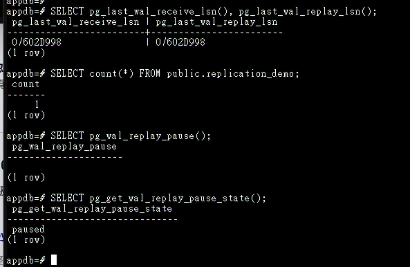
圖（十）pg03 先記錄 Receive LSN、Replay LSN 與資料筆數，再將 WAL 套用狀態切換為 paused。
7.2 在 pg01 追加測試資料
操作位置：切換到 pg01 Console，pg03 保持暫停。
sudo -u postgres psql -d appdb
寫入 20 筆可辨識的測試資料：
INSERT INTO public.replication_demo(source)
SELECT 'day21-replay-pause-' || value
FROM generate_series(1,20) AS series(value);
SELECT count(*) FROM public.replication_demo;
SELECT pg_current_wal_lsn();
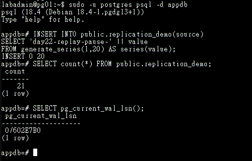
圖（十一）pg03 暫停 WAL 套用期間，pg01 新增 20 筆可辨識資料並記錄新的 WAL LSN；畫面中的 day22-replay-pause-* 對應本文現行的 day21-replay-pause-*。
觀察 pg01 看到的複寫連線：
SELECT application_name,
client_addr,
state,
sent_lsn,
write_lsn,
flush_lsn,
replay_lsn,
replay_lag,
sync_state
FROM pg_stat_replication
ORDER BY application_name;
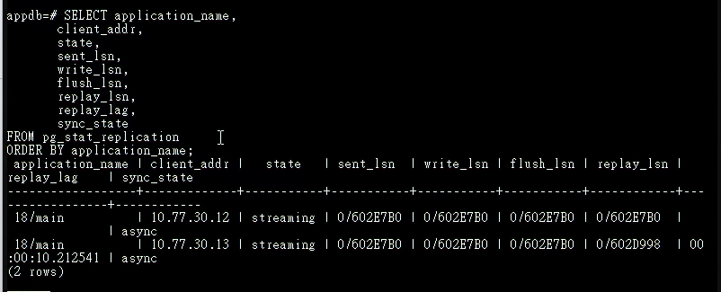
圖（十二）pg01 顯示兩條連線持續 streaming；pg03 的 Replay LSN 暫時落後，反映 WAL 已傳送但尚未完成套用。畫面保留套件預設的連線名稱 18/main；依本文設定後應顯示對應節點名稱。
再檢查實體複寫槽保留 WAL 的位置與估算容量：
SELECT slot_name,
active,
restart_lsn,
pg_size_pretty(
pg_wal_lsn_diff(pg_current_wal_lsn(), restart_lsn)
) AS retained_wal
FROM pg_replication_slots
ORDER BY slot_name;
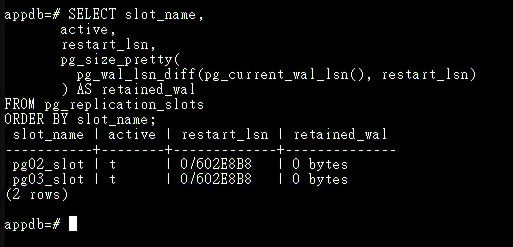
圖（十三）兩個實體複寫槽均為使用中；此時 retained_wal 為 0 bytes，表示複寫槽不需額外保留更早的 WAL。
pg03 的連線可能保持 streaming，write_lsn 與 flush_lsn 也可能繼續前進。這次暫停只停止 WAL 套用，WAL 接收會繼續；觀察重點是 pg03 的 replay_lsn 暫時落後並出現 replay_lag。如果 pg03 已接收並落盤 WAL，實體複寫槽的 restart_lsn 可以前進，因此 retained_wal 可能顯示 0 bytes。套用狀態與 LSN 差距才是這項測試的判讀依據。
7.3 回到 pg03 確認 WAL 套用暫停期間的資料狀態
操作位置：切回 pg03 原本的 psql Session。
SELECT pg_get_wal_replay_pause_state();
SELECT pg_last_wal_receive_lsn(), pg_last_wal_replay_lsn();
SELECT count(*) FROM public.replication_demo;
Receive LSN 可能已前進，Replay LSN 與表格筆數則維持暫停前的結果。
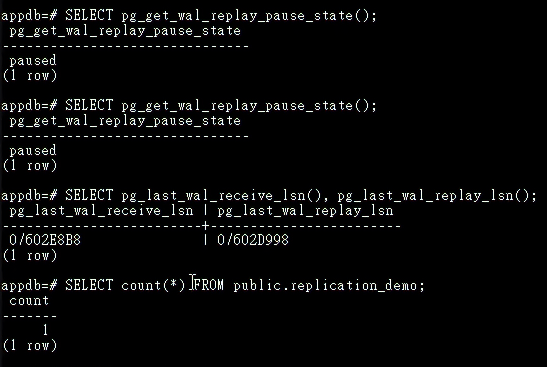
圖（十四）pg03 維持 paused 時，Receive LSN 已前進而 Replay LSN 與資料筆數停留在暫停前，呈現接收與套用兩個不同進度。
7.4 在 pg03 恢復 WAL 套用
在 pg03 執行：
SELECT pg_wal_replay_resume();
SELECT pg_get_wal_replay_pause_state();
狀態應回到 not paused。等待數秒後再次檢查：
SELECT pg_last_wal_receive_lsn(), pg_last_wal_replay_lsn();
SELECT *
FROM public.replication_demo
WHERE source LIKE 'day21-replay-pause-%'
ORDER BY id;
應看到剛才新增的 20 筆資料。輸入 \q 離開 pg03 的 psql。
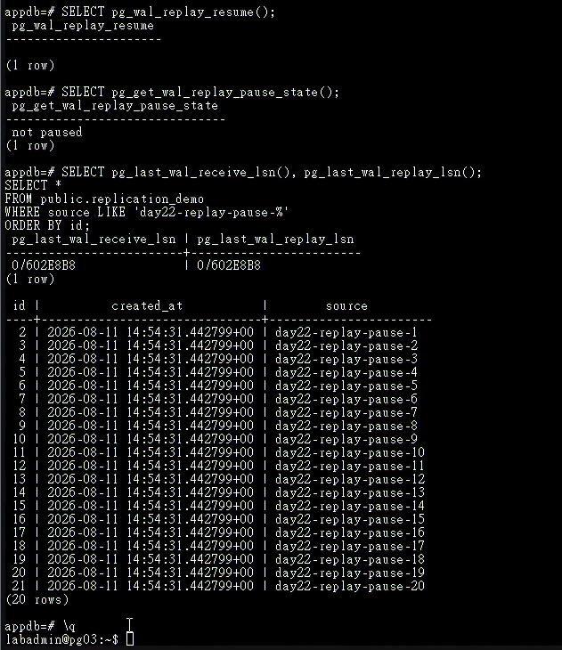
圖（十五）pg03 恢復 WAL 套用後，Replay LSN 追上 Receive LSN，並可讀到新增的 20 筆資料；畫面中的 day22-replay-pause-* 對應本文現行的 day21-replay-pause-*。
7.5 回到 pg01 做收尾確認
在 pg01 的 psql 再執行：
SELECT application_name,
state,
replay_lsn,
replay_lag
FROM pg_stat_replication
ORDER BY application_name;
SELECT slot_name,
active,
restart_lsn,
pg_size_pretty(
pg_wal_lsn_diff(pg_current_wal_lsn(), restart_lsn)
) AS retained_wal
FROM pg_replication_slots
ORDER BY slot_name;
確認 pg03 的 WAL 套用已繼續前進後，輸入 \q 離開。WAL 套用暫停只做短時間觀察，完成後立即恢復。WAL 接收程序持續接收時，尚待套用的 WAL 會累積在 pg03，查詢也會停留在舊資料狀態；若 pg03 中斷接收或確認 WAL，複寫槽的 restart_lsn 便會停止前進，使 pg01 保留越來越多 WAL，並面臨磁碟耗盡風險。
如果中途操作中斷或忘記目前狀態，可在 pg03 強制執行以下收尾命令：
sudo -u postgres psql -d postgres \
-c 'SELECT pg_wal_replay_resume();'
額外實作：驗證熱待命的讀寫邊界
這項測試不影響串流複寫的建置結果，可在完成前述步驟後補做。以下以 pg02 待命節點確認熱待命能提供查詢，並由 PostgreSQL 拒絕寫入操作。
在 pg02 連入 appdb：
sudo -u postgres psql -d appdb -P pager=off
先確認節點處於復原模式，再讀取由 pg01 複寫而來的資料：
SELECT pg_is_in_recovery();
SELECT id, source
FROM public.replication_demo
ORDER BY id DESC
LIMIT 3;
pg_is_in_recovery() 應回傳 true，查詢也應顯示主節點先前寫入的資料。接著在同一個 pg02 工作階段嘗試寫入：
INSERT INTO public.replication_demo(source)
VALUES ('day21-standby-write-test');
PostgreSQL 應回傳 cannot execute INSERT in a read-only transaction。這項錯誤是預期結果，用來證明熱待命的唯讀邊界。完成後輸入 \q 離開。
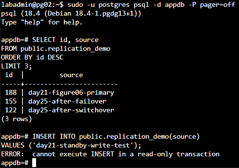
圖（十六）pg02 可以讀取已套用的資料，寫入操作則由 PostgreSQL 拒絕。圖中的節點已由 Patroni 管理，因此資料內容與當下角色不同；熱待命的判讀方式相同。